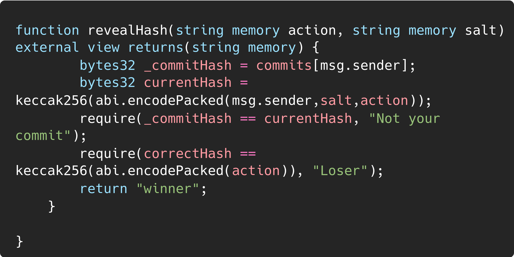
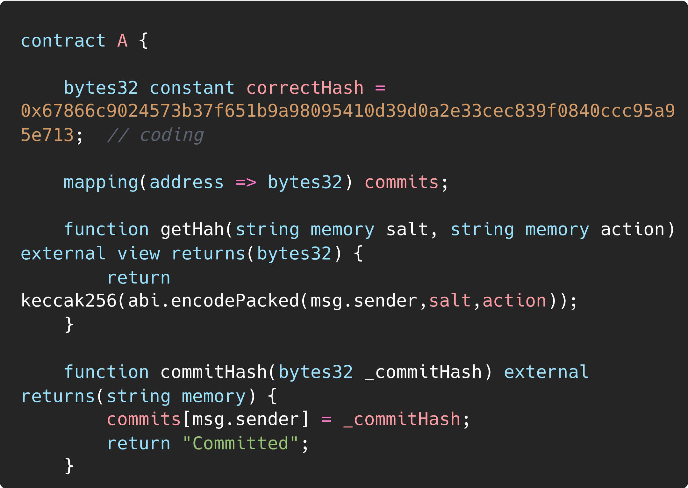

Transparency |
|
| Organization | DeepStack Software Pvt. Ltd. |
|---|---|
| Org URL | https://www.deepstacksoft.com |
Posted on: 2024-09-18
Every Ethereum transaction that gets processed is publicly accessible, including transactions visible within the open mempool. While having full visibility into another user’s actions can sometimes lead to malicious behavior, this inherent level of transparency also provides significant benefits in terms of accountability and convenience, for example front/back-running transactions on DeFi, auction sniping, etc
The commit-reveal pattern is a simple solution that protocols
sometimes implement to allow users to commit to a concealed on-chain
action that will be executed later. It often involves the protocol to
having separate “commit” and “reveal” phases, with users making two
transactions across them
The commit phase
In commit phase a user first
sends a “commit” transaction to the protocol, which binds them to
performing a specific action, the hash of the action details and some
large, random, user-chosen salt value (e.g., commit = keccak256(ACTION,
SALT)). Because hashes are unique™ and non-reversible, without knowing
the salt value it’s practically impossible to discover which action was
chosen to generate the commit hash 
The reveal phase
In reveal phase users will
submit a second, “reveal” transaction to the protocol, providing the
salt and action they used to generate the prior commit hash. The
protocol will compute the commit hash and, only if it matches the hash
from the commit phase, perform the user’s chosen action 